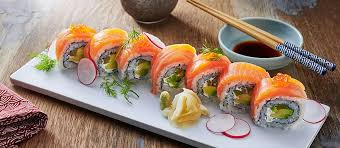

Salmon Sushi
Home!

The most traditional dish in Japan
Sushi ingredients
Sushi rice
Rice vinegar
Nori sheets (seaweed)
Fresh salmon or tuna (optional)
Cucumber (julienned)
Avocado slices
Soy sauce
Wasabi (optional)
Pickled ginger (optional)
Steps
Cook the sushi rice and mix it with rice vinegar.
Let the rice cool to room temperature.
Place a sheet of nori on a bamboo sushi mat.
Spread rice evenly over the nori, leaving an edge.
Add fillings like fish, cucumber, and avocado.
Roll tightly using the mat.
Slice the roll with a sharp knife.
Serve with soy sauce, wasabi, and pickled ginger.